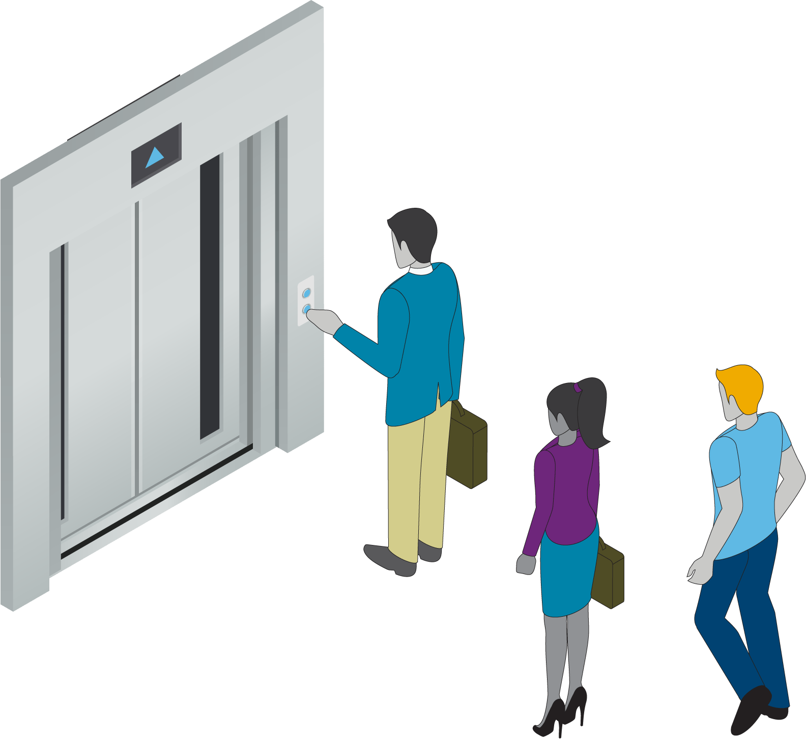
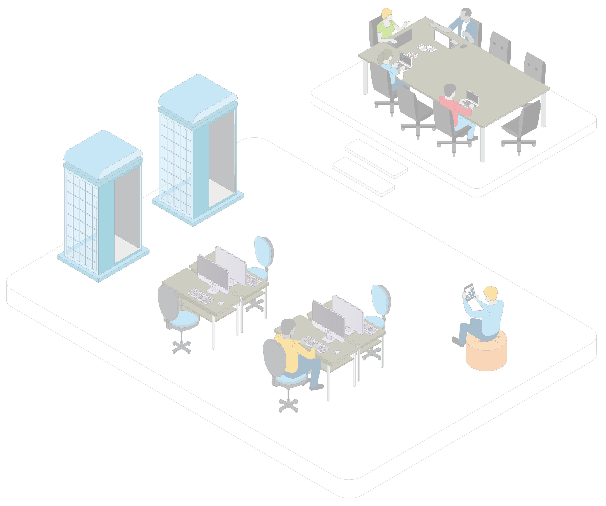
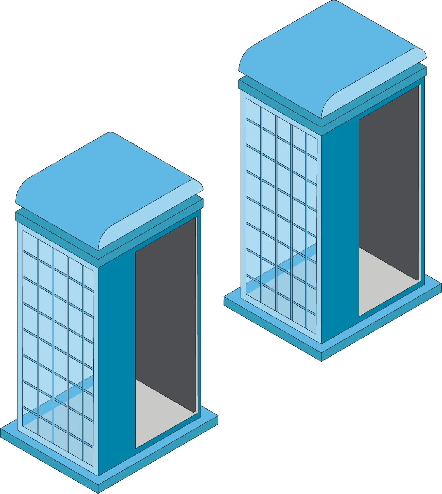
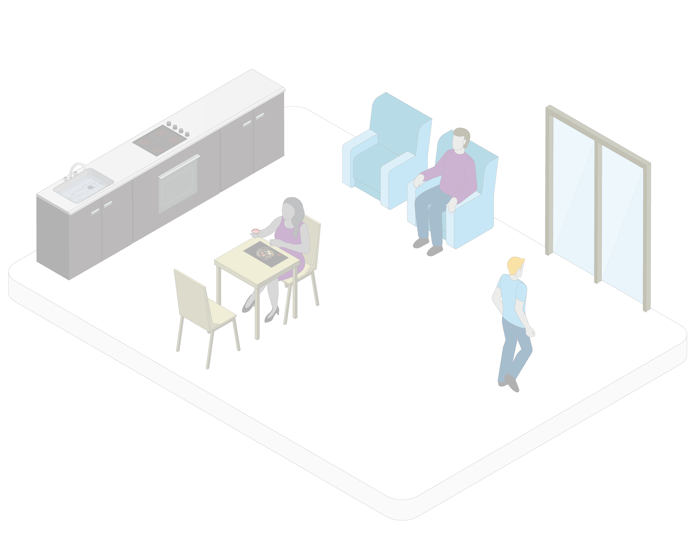
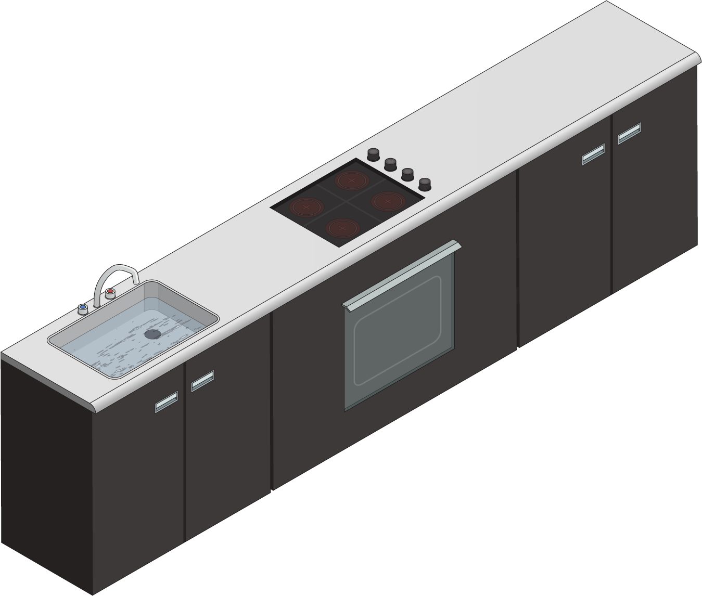

The New Lobby


Companies will need to update policies for visitors, including suppliers, partners and contractors, and provide them with unequivocal guidelines to help ensure their safety and compliance. A centralized approach to managing visitors can help to manage traffic flow so the office maintains ratios and distancing requirements.
Companies will need to provide guidelines on masking, hand shaking, social distancing and other factors. While local regulations will provide
the backbone for many of these practices, companies may opt for more specific rules.
Privacy considerations may preclude the company from requiring workers to get vaccinated or even to share their vaccination status, but signage can reinforce the benefits of vaccination and the office rules in general.
For companies with offices in high-rise buildings, the number of employees who can report back to the office may be constrained by elevator capacity. Long waits for elevators could not only create social distancing risks but also frustrate workers and eliminate the productivity gains the return to the office was meant to deliver. Companies should work with their real estate managers to stay current on limits and adjust plans accordingly.
When workers first arrive, they may be subject to temperature screening.
Companies may require workers
to get vaccinated, share their vaccination status, or submit to periodic surveillance testing.
Three days in, two days out?



An office space reservation system—
accessible on phones, laptops and
in-office kiosks—can help coordinate
traffic flow.
A hybrid workforce model means companies may need to redesign their physical office space with fewer employees working in the office on a given day. Some people may still need designated workspaces.
When offices eventually reopen, employers will need to develop specific organization structures, office environments, schedules, policies, and more to support all modes of work.
With people logging on from both home and the office, and ransomware attacks up 336% from the beginning
of 2019 to the end of last year, upgrading IT infrastructure, protocols, and plans for responding to a cyber incident, will be paramount for enterprise risk management.
6
Demand for larger meeting spaces may grow as groups convene on a less frequent basis—perhaps monthly or quarterly—but in larger numbers. Demand for collaboration tools, such as smartboards, may also increase.
Break Time


Employees will be more apt to find reasons to visit an office that’s bright, comfortably furnished, and visually appealing. Companies should work with organizational designers to
find the setup that works best for
their culture.
No-touch trash cans and automatic soap dispensers are recommended to reduce potential touch points for germs. Some companies may also consider bringing in HEPA filters to enhance air cleaning.
7
The pandemic shone a spotlight on employees’ full personal lives, which often include caring for children or elderly parents, moving across town or across country, coping with an illness, or acclimating a new family pet. For many, their lives would be measurably more satisfying and productive—at work and at home—with added flexibility. Companies that acknowledge this reality—with supportive organizational structures, programs, and processes—will gain a reputation as attractive places to work and bolster their ability to attract and retain top talent.
Some workers could be flexibly assigned a suitable space on a
per-visit basis or rely on expanded lounge areas for casual interactions and pop-in work. In these areas, quick-charging stations can keep workers powered up as they come
and go.
Disclaimer: This document has been provided as an informational resource for Aon clients and business partners. It is intended to provide general guidance on potential exposures and is not intended to provide legal or medical advice or address medical concerns or specific risk circumstances. Due to the dynamic nature of infectious diseases, Aon cannot be held liable for the guidance provided. We strongly encourage visitors to seek additional safety, medical and epidemiologic information from credible sources such as the Centers for Disease Control and Prevention and World Health Organization. As regards insurance coverage questions, whether coverage applies, or a policy will respond, to any risk or circumstance is subject to the specific terms and conditions of the policies and contracts at issue and underwriter determination.
While care has been taken in the production of this document and the information contained within it has been obtained from sources that Aon believes to be reliable, Aon does not warrant, represent or guarantee the accuracy, adequacy, completeness or fitness for any purpose of the report or any part of it and can accept no liability for any loss incurred in anyway by any person who may rely on it. Any recipient shall be responsible for the use to which it puts this document. This document has been compiled using information available to us up to its date of publication.
All descriptions, summaries or highlights of coverage are for general informational purposes only and do not amend, alter or modify the actual terms or conditions of any insurance policy. Coverage is governed only by the terms and conditions of the relevant policy.
© Aon plc 2021. All rights reserved.
6 Aon 2021 Cyber Risk Report.
7 CDC community guidance.
Back to top
Click on the different areas below to reveal more